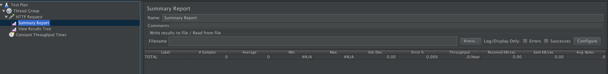
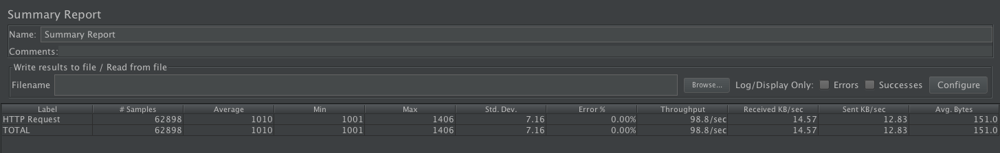
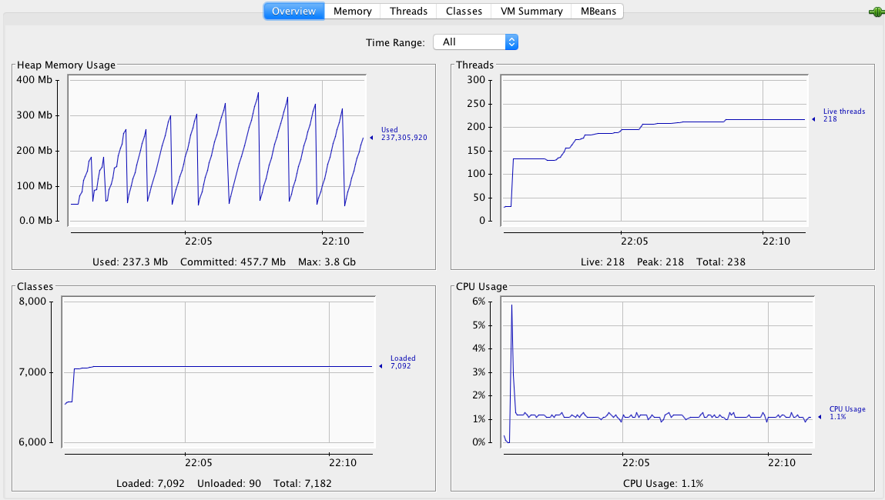
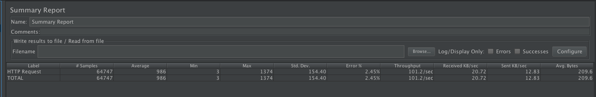
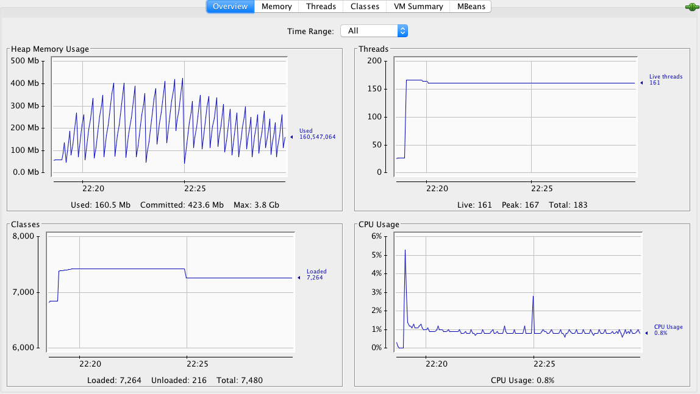
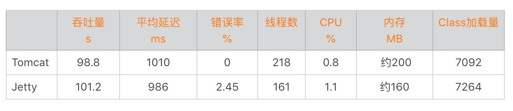

- 00 开篇词 Java程序员如何快速成长？.md.html
- 01 Web容器学习路径.md.html
- 02 HTTP协议必知必会.md.html
- 03 你应该知道的Servlet规范和Servlet容器.md.html
- 04 实战：纯手工打造和运行一个Servlet.md.html
- 05 Tomcat系统架构（上）： 连接器是如何设计的？.md.html
- 06 Tomcat系统架构（下）：聊聊多层容器的设计.md.html
- 07 Tomcat如何实现一键式启停？.md.html
- 08 Tomcat的“高层们”都负责做什么？.md.html
- 09 比较：Jetty架构特点之Connector组件.md.html
- 10 比较：Jetty架构特点之Handler组件.md.html
- 11 总结：从Tomcat和Jetty中提炼组件化设计规范.md.html
- 12 实战：优化并提高Tomcat启动速度.md.html
- 13 热点问题答疑（1）：如何学习源码？.md.html
- 14 NioEndpoint组件：Tomcat如何实现非阻塞I_O？.md.html
- 15 Nio2Endpoint组件：Tomcat如何实现异步I_O？.md.html
- 16 AprEndpoint组件：Tomcat APR提高I_O性能的秘密.md.html
- 17 Executor组件：Tomcat如何扩展Java线程池？.md.html
- 18 新特性：Tomcat如何支持WebSocket？.md.html
- 19 比较：Jetty的线程策略EatWhatYouKill.md.html
- 20 总结：Tomcat和Jetty中的对象池技术.md.html
- 21 总结：Tomcat和Jetty的高性能、高并发之道.md.html
- 22 热点问题答疑（2）：内核如何阻塞与唤醒进程？.md.html
- 23 Host容器：Tomcat如何实现热部署和热加载？.md.html
- 24 Context容器（上）：Tomcat如何打破双亲委托机制？.md.html
- 25 Context容器（中）：Tomcat如何隔离Web应用？.md.html
- 26 Context容器（下）：Tomcat如何实现Servlet规范？.md.html
- 27 新特性：Tomcat如何支持异步Servlet？.md.html
- 28 新特性：Spring Boot如何使用内嵌式的Tomcat和Jetty？.md.html
- 29 比较：Jetty如何实现具有上下文信息的责任链？.md.html
- 30 热点问题答疑（3）：Spring框架中的设计模式.md.html
- 31 Logger组件：Tomcat的日志框架及实战.md.html
- 32 Manager组件：Tomcat的Session管理机制解析.md.html
- 33 Cluster组件：Tomcat的集群通信原理.md.html
- 34 JVM GC原理及调优的基本思路.md.html
- 35 如何监控Tomcat的性能？.md.html
- 36 Tomcat I_O和线程池的并发调优.md.html
- 37 Tomcat内存溢出的原因分析及调优.md.html
- 38 Tomcat拒绝连接原因分析及网络优化.md.html
- 39 Tomcat进程占用CPU过高怎么办？.md.html
- 40 谈谈Jetty性能调优的思路.md.html
- 41 热点问题答疑（4）： Tomcat和Jetty有哪些不同？.md.html
- 特别放送 如何持续保持对学习的兴趣？.md.html
- 结束语 静下心来，品味经典.md.html
- 捐赠
41 热点问题答疑（4）： Tomcat和Jetty有哪些不同？
作为专栏最后一个模块的答疑文章，我想是时候总结一下Tomcat和Jetty的区别了。专栏里也有同学给我留言，询问有关Tomcat和Jetty在系统选型时需要考虑的地方，今天我也会通过一个实战案例来比较一下Tomcat和Jetty在实际场景下的表现，帮你在做选型时有更深的理解。
我先来概括一下Tomcat和Jetty两者最大的区别。大体来说，Tomcat的核心竞争力是成熟稳定，因为它经过了多年的市场考验，应用也相当广泛，对于比较复杂的企业级应用支持得更加全面。也因为如此，Tomcat在整体结构上比Jetty更加复杂，功能扩展方面可能不如Jetty那么方便。
而Jetty比较年轻，设计上更加简洁小巧，配置也比较简单，功能也支持方便地扩展和裁剪，比如我们可以把Jetty的SessionHandler去掉，以节省内存资源，因此Jetty还可以运行在小型的嵌入式设备中，比如手机和机顶盒。当然，我们也可以自己开发一个Handler，加入Handler链中用来扩展Jetty的功能。值得一提的是，Hadoop和Solr都嵌入了Jetty作为Web服务器。
从设计的角度来看，Tomcat的架构基于一种多级容器的模式，这些容器组件具有父子关系，所有组件依附于这个骨架，而且这个骨架是不变的，我们在扩展Tomcat的功能时也需要基于这个骨架，因此Tomcat在设计上相对来说比较复杂。当然Tomcat也提供了较好的扩展机制，比如我们可以自定义一个Valve，但相对来说学习成本还是比较大的。而Jetty采用Handler责任链模式。由于Handler之间的关系比较松散，Jetty提供HandlerCollection可以帮助开发者方便地构建一个Handler链，同时也提供了ScopeHandler帮助开发者控制Handler链的访问顺序。关于这部分内容，你可以回忆一下专栏里讲的回溯方式的责任链模式。
说了一堆理论，你可能觉得还是有点抽象，接下来我们通过一个实例，来压测一下Tomcat和Jetty，看看在同等流量压力下，Tomcat和Jetty分别表现如何。需要说明的是，通常我们从吞吐量、延迟和错误率这三个方面来比较结果。
测试的计划是这样的，我们还是用专栏第36期中的Spring Boot应用程序。首先用Spring Boot默认的Tomcat作为内嵌式Web容器，经过一轮压测后，将内嵌式的Web容器换成Jetty，再做一轮测试，然后比较结果。为了方便观察各种指标，我在本地开发机器上做这个实验。
我们会在每个请求的处理过程中休眠1秒，适当地模拟Web应用的I/O等待时间。JMeter客户端的线程数为100，压测持续10分钟。在JMeter中创建一个Summary Report，在这个页面上，可以看到各种统计指标。

第一步，压测Tomcat。启动Spring Boot程序和JMeter，持续10分钟，以下是测试结果，结果分为两部分：
吞吐量、延迟和错误率

资源使用情况

第二步，我们将Spring Boot的Web容器替换成Jetty，具体步骤是在pom.xml文件中的spring-boot-starter-web依赖修改下面这样：
<dependency>
<groupId>org.springframework.boot</groupId>
<artifactId>spring-boot-starter-web</artifactId>
<exclusions>
<exclusion>
<groupId>org.springframework.boot</groupId>
<artifactId>spring-boot-starter-tomcat</artifactId>
</exclusion>
</exclusions>
</dependency>
<dependency>
<groupId>org.springframework.boot</groupId>
<artifactId>spring-boot-starter-jetty</artifactId>
</dependency>
编译打包，启动Spring Boot，再启动JMeter压测，以下是测试结果：
吞吐量、延迟和错误率

资源使用情况

下面我们通过一个表格来对比Tomcat和Jetty：

从表格中的数据我们可以看到：
- Jetty在吞吐量和响应速度方面稍有优势，并且Jetty消耗的线程和内存资源明显比Tomcat要少，这也恰好说明了Jetty在设计上更加小巧和轻量级的特点。
- 但是Jetty有2.45%的错误率，而Tomcat没有任何错误，并且我经过多次测试都是这个结果。因此我们可以认为Tomcat比Jetty更加成熟和稳定。
当然由于测试场景的限制，以上数据并不能完全反映Tomcat和Jetty的真实能力。但是它可以在我们做选型的时候提供一些参考：如果系统的目标是资源消耗尽量少，并且对稳定性要求没有那么高，可以选择轻量级的Jetty；如果你的系统是比较关键的企业级应用，建议还是选择Tomcat比较稳妥。
最后用一句话总结Tomcat和Jetty的区别：Tomcat好比是一位工作多年比较成熟的工程师，轻易不会出错、不会掉链子，但是他有自己的想法，不会轻易做出改变。而Jetty更像是一位年轻的后起之秀，脑子转得很快，可塑性也很强，但有时候也会犯一点小错误。
不知道今天的内容你消化得如何？如果还有疑问，请大胆的在留言区提问，也欢迎你把你的课后思考和心得记录下来，与我和其他同学一起讨论。如果你觉得今天有所收获，欢迎你把它分享给你的朋友。
© 2019 - 2023 Liangliang Lee. Powered by gin and hexo-theme-book.